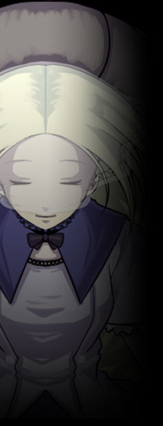

▼民主機構【 オルレアン 】
同名のレジスタンスを前身とした、中層の民間組織。イメージワードは【平和】。
民間警備隊バスターライラック、管理局スヴァリン、職人組合モーターソグニルと密接な繋がりを持つ。
レジスタンス時代の名は【解放の（使徒）オルレアン】。 公式サイト原文
中層を管轄とする民主機構。
かつては平等社会を目指したレジスタンス『解放のオルレアン』であったが、
現在は教育機関の整備や民間警備、孤児院の運営や
一般市民層に広く受け入れられている事もあり、 ＴＲＰＧ上におけるオルレアン主要ＮＰＣは以下の４名となる。 |
|
 |
アリス・ディアーネ
|
||||||||||||||||||
|
オルレアン最高顧問。
透き通るような薄い金髪のロングヘアーを持つ。
性格は穏やかで純粋。ただ、それゆえ少し天然染みたところがある。
ユグドラシル出身ではなく、外界の強制送致によって収容された経緯がある。
異能は思考の送受信を行うエスパー能力【ワンダーランド】。
「戦争なんて関係ないわ！ 目の前に救える命があるなら、それを救うのがオルレアンです！」
「皆さんの協力なくして平和はありえません。私に力を貸して下さい。」 |
|||||||||||||||||||
公式サイト原文
アリス＝ディアーネ オルレアン最高顧問。
盲目車椅子の１７歳の少女。
思考を読み思念を送るテレパシー能力【 ワンダーランド 】を持つエスパー。
ユグドラシル出身ではなく、外の世界から強制収容された経緯を持つ。
又、『登録売買』により下層に売られ慰み者にされていた過去を持ち、
慈愛とカリスマ持ち、人の闇を知り、優しさを知る。
「皆さんの協力なくして平和はありえません。私に力を貸して下さい。」 性能：基礎５ｐステータス＋ボス特性５ｐ |
|||||||||||||||||||